markeR provides a suite of methods for using gene sets (signatures) to quantify and evaluate the extent to which a given gene signature marks a specific phenotype from gene expression data. The package implements various scoring, enrichment and classification approaches, along with tools to compute performance metrics and visualize results.
Table of Contents
Installation
The user can install the development version of markeR from GitHub with:
# install.packages("devtools")
devtools::install_github("DiseaseTranscriptomicsLab/markeR")Main Functions and Future Modules
The current release of markeR includes four primary functions for score-based analysis:
-
CalculateScores: Calculates gene signature scores for each sample using either the ssGSEA, log2 median-centered or ranking method. -
PlotScores: Calculates and displays the calculated scores across conditions using violin plots, density plots, heatmaps or volcano-like plots, depending on the chosen parameters. -
ROC_Scores: Generates ROC (receiver operating characteristic) curves for different scoring methods across contrasts, allowing users to visualize performance differences. -
AUC_Scores: Generates heatmaps for each gene signature, with methods as columns and contrasts as rows, summarizing AUC (i.e., area under the ROC curve) values in a heatmap format.
Additionally, it includes a function for false positive rate (FPR) calculation based on random sets of genes for each signature:
-
FPR_Simulation: Computes false discovery rates using random gene sets.
Tthe package also includes several functions for enrichment-based analysis:
-
calculateDE: Performs differential gene expression (DGE) analysis. -
plotVolcano: Generates volcano plots to visualize DGE statistics. -
runGSEA: Usesfgseato perform Gene Set Enrichment Analysis (GSEA) of DGE results for each contrast. -
plotGSEAenrichment: Generates enrichment plots for gene sets using thefgsea::plotEnrichment()function. -
plotNESlollipop: Generates a lollipop plot to visualize GSEA results. -
plotCombinedGSEA: Creates a scatter plot for visualization of multiple GSEA results across different contrasts.
When analyzing data, it is often unclear whether a given phenotypic variable is meaningfully associated with a target score. To assist in this exploratory process, the package also provides statistical tests and visualizations to assess relationships between phenotypic variables of different types (called the Variable Association module):
-
VariableAssociation_Scores: Assesses the relationship between metadata variables and computed scores using effect size estimation, statistical tests, and visualizations. -
VariableAssociation_GSEA: Evaluates how metadata variables influence gene set enrichment results, identifying significant associations with enrichment scores.
markeR also includes some functions for visualising the behaviour of individual genes from a gene signature:
-
ExpressionHeatmap: Generates an expression heatmap with customizable sample annotations for a given set of genes. -
IndividualGenes_Violins: Creates violin plots, with jittered points and optional faceting, for visualization of individual gene expression distributions across sample groups. -
CorrelationHeatmap: Generates an expression correlation heatmap for a given set of genes. Optionally, the heatmap can be generated separately for different conditions based on metadata. -
ROCandAUCplot: Computes ROC curves and AUC values for each gene based on its expression and sample metadata used for contrast definition. It can plot ROC curves, AUC heatmaps, or both arranged side‐by‐side. -
CohenD_IndividualGenes: Computes Cohen’s d for each gene based on its expression and sample metadata used for contrast definition. Results are visualized as a heatmap, with the option to split and display effect sizes separately for different sample groups defined by an additional metadata variable. If no grouping is specified, all samples are treated as a single group. -
plotPCA: Performs principal component analysis (PCA) on a given dataset and generates the respective plots usingggplot2. It allows users to specify genes of interest (to understand if they explain sufficient variance in the data), customize scaling and centering, and color points based on a metadata variable.
Example
We will be using an already pre-processed gene expression dataset, derived from the Marthandan et al. (2016) study (GSE63577), that includes human fibroblast samples cultured under two different conditions: replicative senescence and proliferative control. The dataset has already been filtered and normalized using the edgeR package, and corrected for batch effect as described in Schneider et al. (2024). For more information about the dataset structure, see the help pages for ?counts_example and ?metadata_example.
This dataset serves as a working example to demonstrate the main functionalities of the markeR package. In particular, it will be used to showcase the two primary modules designed for benchmarking gene signatures:
- Score: calculates expression-based signature scores for each sample, and
- Enrichment: evaluates the over-representation of gene signatures within ranked gene lists.
To the illustration of markeR’s usage, we use a signature consisting of a small set of well-established (i.e., commonly reported in the literature) senescence-associated genes.
# Define simple Senescence Signature
SimpleSenescenceSignature <- c("CDKN1A", "CDKN2A", "GLB1","TP53","CCL2", "LMNB1", "MKI67" )
data(counts_example)
# Load example data
counts_example[1:5,1:5]
#> SRR1660534 SRR1660535 SRR1660536 SRR1660537 SRR1660538
#> A1BG 9.94566 9.476768 8.229231 8.515083 7.806479
#> A1BG-AS1 12.08655 11.550303 12.283976 7.580694 7.312666
#> A2M 77.50289 56.612839 58.860268 8.997624 6.981857
#> A4GALT 14.74183 15.226083 14.815891 14.675780 15.222488
#> AAAS 47.92755 46.292377 43.965972 47.109493 47.213739For illustration purposes of different variable types, let’s imagine we also had two additional variables: one indicating the number of days between sample preparation and sequencing (DaysToSequencing), and another identifying the person who processed each sample (researcher). These variables are hypothetical and not part of the original study design.
data(metadata_example)
set.seed("123456")
metadata_example$Researcher <- sample(c("John","Ana","Francisca"),39, replace = T)
metadata_example$DaysToSequencing <- sample(c(1:20),39, replace = T)
head(metadata_example)
#> sampleID DatasetID CellType Condition SenescentType
#> 252 SRR1660534 Marthandan2016 Fibroblast Senescent Telomere shortening
#> 253 SRR1660535 Marthandan2016 Fibroblast Senescent Telomere shortening
#> 254 SRR1660536 Marthandan2016 Fibroblast Senescent Telomere shortening
#> 255 SRR1660537 Marthandan2016 Fibroblast Proliferative none
#> 256 SRR1660538 Marthandan2016 Fibroblast Proliferative none
#> 257 SRR1660539 Marthandan2016 Fibroblast Proliferative none
#> Treatment Researcher DaysToSequencing
#> 252 PD72 (Replicative senescence) Ana 6
#> 253 PD72 (Replicative senescence) Ana 18
#> 254 PD72 (Replicative senescence) John 19
#> 255 young Ana 2
#> 256 young Francisca 9
#> 257 young John 10Visualise Individual Gene Behaviour
markeR provides a suite of functions to explore the expression and behavior of individual genes within a signature. These tools are especially useful when the user want to inspect how specific genes contribute to a signature’s overall behavior.
Expression Heatmap
The ExpressionHeatmap function generates a heatmap to display the expression levels of selected senescence genes across samples. Samples are annotated by a chosen condition, and expression values are color-scaled for easy visual comparison. Clustering options and customizable color palettes allow for flexible and informative visualization.
annotation_colors <- list(
Condition = c(
"Senescent" = "#65AC7C", # Example color: greenish
"Proliferative" = "#5F90D4" # Example color: blueish
)
)
ExpressionHeatmap(data=counts_example,
metadata = metadata_example,
genes=SimpleSenescenceSignature,
annotate.by = c("Condition"),
annotation_colors = annotation_colors,
colorlist = list(low = "#3F4193", mid = "#F9F4AE", high = "#B44141"),
cluster_rows = TRUE,
cluster_columns = FALSE,
title = "Senescence Genes",
titlesize = 20,
legend_position = "right",
scale_position="right")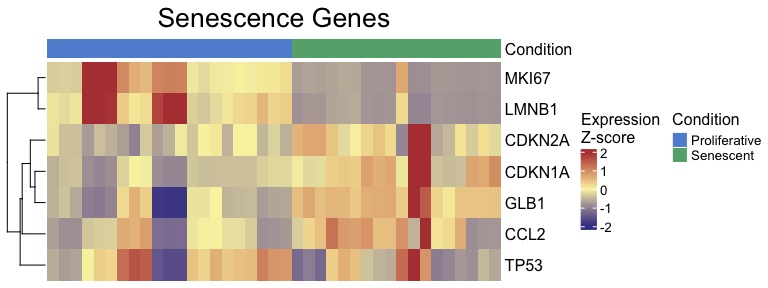
Expression Violins
The IndividualGenes_Violins function creates violin plots to visualize the expression distributions of selected senescence genes across conditions. Jittered points represent individual samples, and grouping (x axis, GroupingVariable) and color variables (ColorVariable and ColorValues) from the metadata allow for additional stratification and insight. Customization options include layout, point size, colors, and axis labeling.
senescence_triggers_colors <- c(
"none" = "#E57373", # Soft red
"Telomere shortening" = "#4FC3F7" # Vivid sky blue
)
IndividualGenes_Violins(data = counts_example,
metadata = metadata_example,
genes = SimpleSenescenceSignature,
GroupingVariable = "Condition",
plot=T,
ncol=NULL,
nrow=1,
divide=NULL,
invert_divide=FALSE,
ColorValues=senescence_triggers_colors,
pointSize=2,
ColorVariable="SenescentType",
title="Senescence Genes",
widthTitle=16,
y_limits = NULL,
legend_nrow=1,
xlab="Condition",
colorlab="") 
Correlation Heatmap
The CorrelationHeatmap function displays pairwise correlations between selected genes, helping to reveal co-expression patterns within the senescence signature. Correlations can be computed separately for different conditions, and the heatmap is fully customizable with options for clustering, color scaling, and correlation method (e.g., Spearman or Pearson).
CorrelationHeatmap(data=counts_example,
metadata = metadata_example,
genes=SimpleSenescenceSignature,
separate.by = "Condition",
method = "spearman",
colorlist = list(low = "#3F4193", mid = "#F9F4AE", high = "#B44141"),
limits_colorscale = c(-1,0,1),
widthTitle = 16,
title = "Senescence Genes",
cluster_rows = TRUE,
cluster_columns = TRUE,
detailedresults = FALSE,
legend_position="right",
titlesize=20)
ROC and AUC
The ROCandAUCplot function evaluates the discriminatory power of individual genes in the signature by computing ROC curves and AUC values based on a binary classification (e.g., senescent vs. proliferative). If the selected grouping variable has more than two levels, the user can specify the reference group using the class parameter. For example, if a variable has levels A, B, C, and D, setting class = c("A", "B") will group samples from A and B together as the positive class*, while the remaining samples (C and D) are automatically grouped as the negative class. Additionally, the user can use the group_var parameter to split and display results separately for each level of another metadata variable — allowing for subgroup-specific ROC analyses. Outputs include individual ROC plots and an AUC heatmap, with customisable layout, color schemes, and clustering options—ideal for identifying genes with strong discriminatory ability. If group_varis not specified, the AUC values will be displayed in a barplot.
- For ease of interpretation, the directionality of the comparison is adjusted so that the AUC is always >=0.5, showing only discriminatory power rather than directionality.
options(error=recover)
ROCandAUCplot(counts_example,
metadata_example,
condition_var = "Condition",
class = "Senescent",
group_var=NULL,
title = NULL,
genes=SimpleSenescenceSignature,
plot_type = "all",
auc_params = list(colors = "#3B415B",
limits = c(0.5,1) ),
roc_params = list(nrow=3,
ncol=3,
colors="#3B415B"),
commomplot_params = list(widths=c(0.5,0.3)))
Cohen’s d
The CohenD_IndividualGenes function computes the effect size (Cohen’s d) of the difference in expression of each gene between two conditions, given by the variable condition_var. If the selected condition variable has more than two levels, the class parameter specifies which condition will be compared to the rest. Additionally, the user can use the group_var parameter to split and display results separately for each level of another metadata variable. Results are visualized as a heatmap, with customizable color scales and clustering options for easy interpretation of effect sizes across genes. If group_var is not specified, the function will return a barplot instead.
CohenD_IndividualGenes(counts_example,
metadata_example,
genes=SimpleSenescenceSignature,
condition_var = "Condition",
class = "Senescent",
group_var = NULL,
params = list(colors = "#3B415B",
limits = NULL,
cluster_rows=T))
PCA with only genes of interest
The plotPCA function performs a PCA on the expression of a selected set of genes to understand if they explain enough variance in the data, allowing you to test if the genes in the signature are sufficient to separate the group of interest (given by the `ColourVariable’ parameter). While previous metrics assess discriminatory power quantitatively (e.g., AUC), PCA provides a complementary, unsupervised visualization that can help assess whether the gene signature is sufficient to visually separate groups of interest. Users can customize which principal components to display using the PCs argument and adjust layout, point size, and colour annotations for comparison across conditions.
annotation_colors <- c(
"Senescent" = "#65AC7C", # Example color: greenish
"Proliferative" = "#5F90D4" # Example color: blueish
)
plotPCA(data = counts_example,
metadata = metadata_example,
genes=SimpleSenescenceSignature,
scale=FALSE,
center=TRUE,
PCs=list(c(1,2), c(2,3), c(3,4)),
ColorVariable="Condition",
ColorValues=annotation_colors,
pointSize=5,
legend_nrow=1,
ncol=3,
nrow=NULL)
Calculate Senescence Scores
The CalculateScores function computes the signature scores for each sample based on predefined gene sets, such as a senescence signature. It returns a named list where each entry corresponds to a specific signature and includes the calculated scores, along with metadata (if available). When setting method = "all", the function returns a list, where each element corresponds to a scoring method and contains the respective data frame of scores, allowing comparison between methods. The function allows users to select from three different scoring methods:
- ssGSEA: Computes an enrichment score for each signature in each sample.
- logmedian: Calculates the score as the sum of the normalized (log2-median-centered) expression values of the signature genes, divided by the number of genes.
- ranking: Determines the score by ranking the expression of signature genes and normalizing the result.
These methods are very similar and, when applied to a robust gene signature, will yield similar results across all three methods. Empirically, a good signature will be one that shows consistent results, both in the calculated scores and in Cohen’s d or F statistics, across different methods. If the signature is not robust, or if there is considerable noise, the results across methods may differ significantly. Consistent scores across methods typically indicate a more reliable and meaningful signature. These methods are explained in more detail below, allowing the user to select the most appropriate one for their analysis.
The PlotScores function can be used to compute and visualize the scores in various ways, depending on the method and variable chosen.
- If
method = "all"and the variable is categorical, it will return a heatmap of Cohen’s d or F statistics and a volcano plot showing contrasts between all groups of that variable. - If
method = "all"and the variable is numeric, a heatmap of Cohen’s F and a volcano plot will be produced. - If
method != "all"and the variable is categorical, it will generate a violin plot for each signature. - If
method != "all"and the variable isNULL, a density plot of the score distribution will be displayed. - If
method != "all"and the variable is numeric, a scatter plot will be created to show the relationship between the scores and the numeric variable.
logmedian method
The following example uses the logmedian method to calculate a gene signature score. This method first applies a log2 transformation to the expression values, and then centers them by subtracting the median expression (across all samples) for each genes. The score for each sample is then computed by summing the normalised expression values of the signature genes, and dividing by the number of genes in the signature. This normalization makes each gene’s expression relative to its typical behavior across the dataset, allowing for meaningful comparisons between genes with different expression scales. By using log2 median-centering, the method ensures that both highly and lowly expressed genes contribute comparably to the score, as long as their variances are similar. This normalization emphasizes relative changes in expression rather than absolute values, allowing the score to reflect the coordinated behavior of the genes in a signature. Users can calculate the gene signature score for each sample based on one or more predefined gene sets (signatures).
Here’s an example where we calculate the signature score using the “logmedian” method:
df_Scores <- CalculateScores(data = counts_example,
metadata = metadata_example,
method = "logmedian",
gene_sets = list(Senescence=SimpleSenescenceSignature))
#> Considering unidirectional gene signature mode for signature Senescence
head(df_Scores$Senescence)
#> sample score DatasetID CellType Condition
#> 1 SRR1660534 -0.6894748 Marthandan2016 Fibroblast Senescent
#> 2 SRR1660535 -0.4483299 Marthandan2016 Fibroblast Senescent
#> 3 SRR1660536 -0.4596502 Marthandan2016 Fibroblast Senescent
#> 4 SRR1660537 -0.2198753 Marthandan2016 Fibroblast Proliferative
#> 5 SRR1660538 -0.2672930 Marthandan2016 Fibroblast Proliferative
#> 6 SRR1660539 -0.2623188 Marthandan2016 Fibroblast Proliferative
#> SenescentType Treatment Researcher DaysToSequencing
#> 1 Telomere shortening PD72 (Replicative senescence) Ana 6
#> 2 Telomere shortening PD72 (Replicative senescence) Ana 18
#> 3 Telomere shortening PD72 (Replicative senescence) John 19
#> 4 none young Ana 2
#> 5 none young Francisca 9
#> 6 none young John 10The user can also chose to directly plot the scores.
Effect sizes can be computed using the compute_cohen parameter (default = T): when the grouping variable has only two levels, Cohen’s d is calculated by default. If there are more than two levels, Cohen’s f is used unless a specific pairwise comparison is defined via cond_cohend, in which case Cohen’s d is reported for that comparison. If pvalcalc = TRUE (default = FALSE), an associated p-value (not corrected for multiple testing) is also reported. The p-value is derived from a two-sample t-test for two-group comparisons or numeric variables, or from an ANOVA for multi-group comparisons.
senescence_triggers_colors <- c(
"none" = "#E57373", # Soft red
"Telomere shortening" = "#4FC3F7" # Vivid sky blue
)
cond_cohend <- list(A=c("Senescent"),
B=c("Proliferative"))
PlotScores(data = counts_example,
metadata = metadata_example,
gene_sets = list(Senescence=SimpleSenescenceSignature),
ColorVariable = "SenescentType",
Variable="Condition",
method ="logmedian",
ColorValues = senescence_triggers_colors,
ConnectGroups=TRUE,
ncol = NULL,
nrow = NULL,
widthTitle=24,
limits = NULL,
legend_nrow = 1,
pointSize=4,
compute_cohen=T,
cond_cohend=cond_cohend,
title="Marthandan et al. 2016",
labsize=9,
titlesize = 12) 
Given that some genes are expected to be upregulated while others are expected to be downregulated in senescence, it is useful to consider a bidirectional signature. In a bidirectional signature, the direction of gene regulation (either up or down) is explicitly accounted for, offering more nuanced insights into gene expression changes in different conditions.
- Unidirectional gene sets: These are sets of genes assumed to have the same expected direction of regulation (either all upregulated or all downregulated). To provide a unidirectional signature, the user would submit a named list where each element is a vector of gene names representing the gene set.
-
Bidirectional gene sets: In a bidirectional signature, genes may be expected to be either upregulated or downregulated. For this, the user provides a named list where each element is a data frame with two columns:
- The first column contains the gene names.
- The second column indicates the expected direction of enrichment for each gene (with 1 representing upregulated genes and -1 representing downregulated genes).
For example, if the user provides a bidirectional signature and does not specify the direction of regulation, they will likely get a result that differs from when each gene’s putative direction of regulation is made explicit. Without specifying the direction, both upregulated and downregulated genes are treated as if their contribution to the overall score has the same sign. In the current example, senescent samples show a lower score than proliferative ones, which could dramatically affect their interpretation. If the direction is specified, senescent samples show an expected higher score than proliferative ones.
Therefore, it is strongly advised that, whenever possible (i.e., if known), the user states the putative regulation “sign” of the genes in the signature. This helps ensure more accurate and meaningful interpretations of the data.
SimpleSenescenceSignature_bidirectional <- data.frame(gene=c("CDKN1A", "CDKN2A", "GLB1","TP53","CCL2", "LMNB1", "MKI67" ),
enrichment=c(1,1,1,1,1,-1,-1))
print(SimpleSenescenceSignature_bidirectional)
#> gene enrichment
#> 1 CDKN1A 1
#> 2 CDKN2A 1
#> 3 GLB1 1
#> 4 TP53 1
#> 5 CCL2 1
#> 6 LMNB1 -1
#> 7 MKI67 -1
PlotScores(data = counts_example,
metadata = metadata_example,
gene_sets = list(Senescence=SimpleSenescenceSignature_bidirectional),
ColorVariable = "SenescentType",
Variable="Condition",
method ="logmedian",
ColorValues = senescence_triggers_colors,
ConnectGroups=TRUE,
ncol = NULL,
nrow = NULL,
widthTitle=24,
limits = NULL,
legend_nrow = 1,
pointSize=4,
compute_cohen=T,
cond_cohend=cond_cohend,
title="Marthandan et al. 2016",
labsize=9,
titlesize = 12) 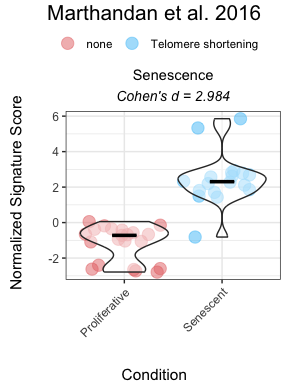
To use the function for numeric variables, the user should specify the relevant parameters, including the numeric variable to be analyzed. The function will generate a scatter plot for the numeric variable, optionally calculating Cohen’s f as the effect size. The user can choose a correlation method (e.g., Pearson, Spearman, or Kendall) to assess the relationship between the variable and the signature scores. The plot will also include optional p-value calculations for comparisons.
Here is an example of how to configure the function for numeric variables:
PlotScores(data = counts_example,
metadata = metadata_example,
gene_sets = list(Senescence_Bidirectional = SimpleSenescenceSignature_bidirectional,
Senescence = SimpleSenescenceSignature),
Variable = "DaysToSequencing",
method = "logmedian",
ColorValues = "#3B415B",
ConnectGroups = FALSE,
ncol = NULL,
nrow = NULL,
pointSize = 6,
compute_cohen = TRUE,
pvalcalc = TRUE,
title = "Marthandan et al. 2016",
labsize=9,
titlesize = 12,
widthTitle = 26,
cor = "pearson")
For users interested in viewing the overall distribution of scores across gene signatures, the PlotScores function can be used without specifying the GroupingVariable parameter, i.e, without grouping scores by any metadata variable. In this case, the function will automatically generate a grid of density plots, with each plot representing the distribution of scores for a specific gene signature.
options(error=recover)
PlotScores(data = counts_example,
metadata = metadata_example,
gene_sets = list(Senescence_Bidirectional = SimpleSenescenceSignature_bidirectional,
Senescence = SimpleSenescenceSignature),
method ="logmedian",
ColorValues = NULL,
ncol = NULL,
nrow = NULL,
widthTitle=24,
limits = NULL,
title="Marthandan et al. 2016",
labsize=9,
titlesize = 11) 
ssGSEA method
The same approach can be applied for ssGSEA (single-sample Gene Set Enrichment Analysis; Barbie et al. (2009)) for score calculation and visualization, both for unidirectional and bidirectional signatures. ssGSEA computes an enrichment score for each gene signature in each sample using an adaptation of the gsva() function from the GSVA package. This method is useful for evaluating gene set enrichment in individual samples rather than groups, as described in the sections below.
senescence_triggers_colors <- c(
"none" = "#E57373", # Soft red
"Telomere shortening" = "#4FC3F7" # Vivid sky blue
)
cond_cohend <- list(A=c("Senescent"),
B=c("Proliferative"))
PlotScores(data = counts_example,
metadata = metadata_example,
gene_sets = list(Senescence_Bidirectional = SimpleSenescenceSignature_bidirectional,
Senescence = SimpleSenescenceSignature),
ColorVariable = "SenescentType",
Variable="Condition",
method ="ssGSEA",
ColorValues = senescence_triggers_colors,
ConnectGroups=TRUE,
ncol = NULL,
nrow = NULL,
widthTitle=24,
limits = NULL,
legend_nrow = 1,
pointSize=4,
compute_cohen=T,
cond_cohend=cond_cohend,
title="Marthandan et al. 2016",
labsize=9,
titlesize = 12) 
Ranking method
The ranking method computes gene signature scores for each sample by ranking the expression of signature genes in the dataset and normalizing the score based on the total number of genes.
The following example demonstrates the use of the “ranking” method for both unidirectional and bidirectional signatures:
senescence_triggers_colors <- c(
"none" = "#E57373", # Soft red
"Telomere shortening" = "#4FC3F7" # Vivid sky blue
)
cond_cohend <- list(A=c("Senescent"),
B=c("Proliferative"))
PlotScores(data = counts_example,
metadata = metadata_example,
gene_sets = list(Senescence_Bidirectional = SimpleSenescenceSignature_bidirectional,
Senescence = SimpleSenescenceSignature),
ColorVariable = "SenescentType",
Variable="Condition",
method ="ranking",
ColorValues = senescence_triggers_colors,
ConnectGroups=TRUE,
ncol = NULL,
nrow = NULL,
widthTitle=24,
limits = NULL,
legend_nrow = 1,
pointSize=4,
compute_cohen=T,
cond_cohend=cond_cohend,
title="Marthandan et al. 2016",
labsize=9,
titlesize = 12) 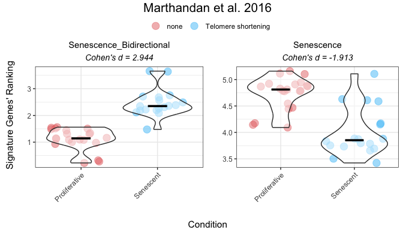
All methods
To compare various metrics across different condition combinations, violin plots may not always be the best choice. In such cases, users can setmethod = "all" to generate a summary heatmap and volcano-like plot. The function will return one heatmap per gene set, with rows corresponding to all possible combinations of values in the GroupingVariable. In parenthesis is represented the p-value, adjusted using the BH method (i.e., the Benjamini–Hochberg false discovery rate procedure), across all combinations of contrasts and gene signatures. It will also return a volcano-like plot (Cohen’s d effect sizes vs -log10(adjusted p-values)), where each dot represents a method-signature pair, faceted by contrast. The dashed lines represent user-defined thresholds for significance and effect size.
The mode parameter controls how contrasts are generated for categorical variables, allowing users to adjust the complexity of the analysis:
- “simple”: Performs the minimal number of pairwise comparisons between group levels (e.g., for a factor with levels A, B, C and D, it generates A - B, A - C, A - D, B - C, B - D, C - D).
- “medium”: Includes comparisons between one group and the union of other groups (e.g., A - (B + C + D); B - (A + C + D)), allowing for broader contrasts beyond simple pairwise comparisons.
- “extensive”: Allows for all possible algebraic combinations of group levels (e.g., (A + B) - (C + D)).
Overall_Scores <- PlotScores(data = counts_example,
metadata = metadata_example,
gene_sets=list(Senescence_Bidirectional = SimpleSenescenceSignature_bidirectional,
Senescence = SimpleSenescenceSignature),
Variable="Condition",
method ="all",
ncol = NULL,
nrow = NULL,
widthTitle=30,
limits = c(0,3.5),
title="Marthandan et al. 2016",
titlesize = 10,
ColorValues = list(heatmap=c("#F9F4AE", "#B44141"),
volcano=c(Senescence="#A07395",
Senescence_Bidirectional="#CA7E45")),
mode="simple",
widthlegend=30,
sig_threshold=0.05,
cohen_threshold=0.6,
pointSize=6,
colorPalette="Paired")
Overall_Scores$heatmap
Overall_Scores$volcano
Classification Potential of Gene Signatures
The ROC_Scores and AUC_Scores functions allow users to evaluate the classification potential of gene set scores based on ROC curves and their AUC values. These functions help to assess how well a given score can differentiate between conditions, based on predefined contrasts. Besides method="all", these functions can also be used for each method individually.
The ROC_Scores function generates ROC curves for different scoring methods across contrasts, allowing users to visualize performance differences.
ROC_Scores(data = counts_example,
metadata = metadata_example,
gene_sets=list(Senescence_Bidirectional = SimpleSenescenceSignature_bidirectional,
Senescence = SimpleSenescenceSignature),
method = "all",
variable ="Condition",
colors = c(logmedian = "#3E5587", ssGSEA = "#B65285", ranking = "#B68C52"),
grid = TRUE,
spacing_annotation=0.3,
ncol=NULL,
nrow=1,
mode = "simple",
widthTitle = 28,
titlesize = 10,
title="Marthandan et al. 2016") 
The AUC_Scores function generates heatmaps summarizing AUC values for each gene signature, with methods as columns and contrasts as rows.
AUC_Scores(data = counts_example,
metadata = metadata_example,
gene_sets=list(Senescence_Bidirectional = SimpleSenescenceSignature_bidirectional,
Senescence = SimpleSenescenceSignature),
method = "all",
mode = "simple",
variable="Condition",
nrow = NULL,
ncol = NULL,
limits = NULL,
widthTitle = 28,
titlesize = 10,
ColorValues = c("#F9F4AE", "#B44141"),
title="Marthandan et al. 2016") 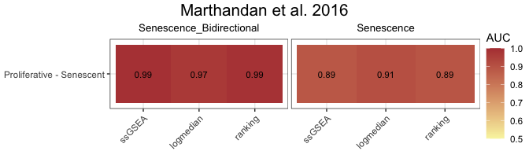
False Positive Rate (FPR) Calculations
The user can assess the significance of gene signature scores by comparing observed effect sizes against a distribution of those originated by random signatures with the same number of genes. For each original gene signature, the function calculates the observed Cohen’s d (and p‑value) using (GroupingVariable). It then generates a number of simulated signatures (number_of_sims) by randomly sampling the same number of genes from a user provided gene list (gene_list) and computes their Cohen’s d values. The simulation results are visualised as violin plots of the distribution of Cohen’s d values for each method, overlaid with the observed values of the original signatures, and a 95th percentile threshold. Significance is indicated by distinct point shapes based on the associated p‑value.
FPR_Simulation(data = counts_example,
metadata = metadata_example,
original_signatures = list(Senescence_Bidirectional = SimpleSenescenceSignature_bidirectional,
Senescence = SimpleSenescenceSignature),
gene_list = row.names(counts_example),
number_of_sims = 10,
title = "Marthandan et al. 2016",
widthTitle = 30,
Variable = "Condition",
titlesize = 12,
pointSize = 5,
labsize = 10,
mode = "simple",
ColorValues=NULL,
ncol=NULL,
nrow=NULL ) 
Score association with Chosen Phenotypic Variables
markeR provides statistical tests and visualizations to assess relationships between phenotypic variables of different types and gene signature scores.
- Linear models estimate effect sizes (Cohen’s f on signature scores) associated with numeric and categorical variables.
- Categorical variables are compared across all possible pairwise contrasts using Cohen’s d with adjusted p-values.
- Lollipop plots highlight effect sizes, contrast plots compare groups, and distribution plots reveal score patterns.
The function returns a structured list containing:
- Overall: Effect sizes and p-values for each contrasted phenotypic variable.
- Contrasts: Cohen’s d and adjusted p-values for contrasts between levels of categorical variables, with the resolution of contrasts determined by the
modeparameter. - plot: A combined visualization with three main panels: (1) lollipop plots of Cohen’s f for each variable of interest, (2) distribution plots of the score by variable (density or scatter depending on variable type), and (3, if applicable) lollipop plots of Cohen’s d for contrasts in categorical variables.
- plot_contrasts, plot_overall, plot_distributions: Individual panels from the combined plot — lollipop plots of Cohen’s f (colored by p-value), Cohen’s d for contrasts of non-numerical variables (colored by BH-adjusted p-value), and density or scatter plots of the score by variable type, respectively.
This approach allows users to quickly identify potential relationships between scores and phenotypic variables, guiding further analysis.
This approach requires that the user is exploring a specific method for score calculation and gene signature. For illustration purposes, we will herein go with the logmedian method the Bidirectional Senescence Signature, using the mode=extensive.
We will use the made-up variables created at the beginning of the script to represent two additional types of variables: one categorical with more than two levels, and one numerical. Specifically, “Researcher” represents the person who processed the samples, and “DaysToSequencing” indicates the number of days between sample preparation and sequencing. Although these variables are synthetic, they mimic potential technical covariates that could introduce unwanted variation into the data. If they show an association with the senescence score, this could indicate a batch effect, where technical variation confounds the biological signal—requiring more careful interpretation of the results.
results_scoreassoc_bidirect <- Score_VariableAssociation(data = counts_example,
metadata = metadata_example,
cols = c("Condition","Researcher","DaysToSequencing"),
method="logmedian",
gene_set = list(Senescence_Bidirectional = SimpleSenescenceSignature_bidirectional),
mode="extensive",
nonsignif_color = "white", signif_color = "red", saturation_value=NULL,sig_threshold = 0.05,
widthlabels=30, labsize=10, title=NULL, titlesize=14, pointSize=5, discrete_colors=NULL,
continuous_color = "#8C6D03", color_palette = "Set2")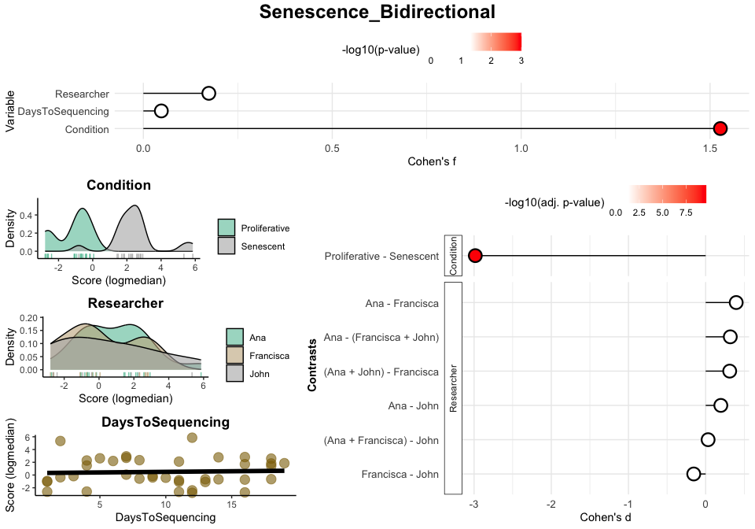
results_scoreassoc_bidirect$Overall
#> Variable Cohen_f P_Value
#> 1 Condition 1.52736028 3.278479e-11
#> 2 Researcher 0.17329879 5.870614e-01
#> 3 DaysToSequencing 0.04759144 7.738244e-01
results_scoreassoc_bidirect$Contrasts
#> Variable Contrast Group1 Group2
#> 1 Condition Proliferative - Senescent Proliferative Senescent
#> 2 Researcher Ana - John Ana John
#> 3 Researcher Ana - Francisca Ana Francisca
#> 4 Researcher Francisca - John Francisca John
#> 5 Researcher Ana - (Francisca + John) Ana Francisca + John
#> 6 Researcher (Ana + Francisca) - John Ana + Francisca John
#> 7 Researcher (Ana + John) - Francisca Ana + John Francisca
#> CohenD PValue padj
#> 1 -2.98420572 3.278479e-11 2.294935e-10
#> 2 0.19639043 6.661502e-01 8.626076e-01
#> 3 0.39561859 2.729488e-01 6.132382e-01
#> 4 -0.15441156 7.393780e-01 8.626076e-01
#> 5 0.31910742 3.294782e-01 6.132382e-01
#> 6 0.03157417 9.400893e-01 9.400893e-01
#> 7 0.31127790 3.504218e-01 6.132382e-01Enrichment-Based Methods
Differentially Expressed Genes
The calculateDE function in the markeR package leverages the limma framework to compute differential gene expression statistics from raw count data. This function is highly flexible and supports several modes of operation depending on the user’s experimental design. In the examples below, we illustrate two common scenarios:
-
Automatic Design Matrix with Contrasts: In the first example, the design matrix is built automatically from the metadata using a specified variable (here,
"Condition"). The user must explicitly define the comparisons of interest based on the levels of this variable (e.g.,Senescent - Proliferative). Internally, this approach fits a linear model without an intercept, enabling the user to define contrasts between the levels. This is ideal for simpler experimental designs, where quick comparison between predefined groups is desired without manually specifying the full model matrix. -
Providing an Externally Constructed Design Matrix: In the second example, the user manually creates the design matrix (e.g., using
model.matrix(~ 0 + Condition)for a no-intercept model) and provides it directly tocalculateDE. This gives full control over how the design is specified, including complex experimental setups or custom encodings. Multiple contrasts can be defined later, based on this matrix, to extract specific comparisons of interest, using theContrastparameter. If this parameter is left asNULL, the function will return results for all conditions (i.e. columns) defined in the design matrix. This approach is recommended when the user has a complex design or has already constructed the design matrix as part of a broader analysis pipeline.
Below are the corresponding code snippets demonstrating each scenario, by answering the same question: What are the genes differentially expressed between senescence and proliferative cells?
# Example 1: Build design matrix from variables (Condition) and apply a contrast.
# In this case, the design matrix is constructed automatically using the variable "Condition".
DEGs <- calculateDE(data = counts_example,
metadata = metadata_example,
variables = "Condition",
contrasts = c("Senescent - Proliferative"))
DEGs$`Senescent-Proliferative`[1:5,]
#> logFC AveExpr t P.Value adj.P.Val B
#> CCND2 3.816674 4.406721 12.393130 2.747202e-15 2.435712e-12 24.70982
#> MKI67 -3.581174 6.605339 -9.197510 2.007135e-11 4.992097e-10 15.96203
#> PTCHD4 3.398914 3.556007 10.740867 2.318137e-13 3.002118e-11 20.35906
#> KIF20A -3.365481 5.934893 -9.728709 4.176398e-12 1.844336e-10 17.51106
#> CDC20 -3.304602 6.104079 -9.801724 3.375212e-12 1.657492e-10 17.72110
# Example 2: Supply a custom design matrix directly.
# Here, the design matrix is created externally (using no intercept, for instance).
design <- model.matrix(~0 + Condition, data = metadata_example)
colnames(design) <- c("Proliferative","Senescent")
DEGs2 <- calculateDE(data = counts_example,
metadata = NULL,
variables = NULL,
modelmat = design,
contrasts = c("Senescent - Proliferative"))
DEGs2$`Senescent-Proliferative`[1:5,]
#> logFC AveExpr t P.Value adj.P.Val B
#> CCND2 3.816674 4.406721 12.393130 2.747202e-15 2.435712e-12 24.70982
#> MKI67 -3.581174 6.605339 -9.197510 2.007135e-11 4.992097e-10 15.96203
#> PTCHD4 3.398914 3.556007 10.740867 2.318137e-13 3.002118e-11 20.35906
#> KIF20A -3.365481 5.934893 -9.728709 4.176398e-12 1.844336e-10 17.51106
#> CDC20 -3.304602 6.104079 -9.801724 3.375212e-12 1.657492e-10 17.72110After running your differential expression analysis (for example, using the calculateDE function), you can visualize your results with the plotVolcano function. This function provides a flexible interface for exploring your data by allowing you to:
-
Plot Differential Gene Expression Statistics:
Display a volcano plot with your chosen statistics (e.g., log fold-change on the x-axis and –log₁₀ adjusted p-value on the y-axis). -
Color Interesting Genes:
Highlight genes that pass user-specified thresholds by adjustingthreshold_yandthreshold_x. -
Annotate Top and Bottom N Genes:
Optionally, label the top (and bottom) N genes based on the chosen statistic to quickly identify the most significant genes. -
Highlight Gene Signatures: If the user provides a list of gene signatures using the
genesargument, the function can highlight these genes in the plot. The user can also specify distinct colors for putativelyupregulated and downregulated if their direction is known, or a color for genes that do not have a putative direction.
Below is an example usage of plotVolcano that visualizes differential expression results from a DEResultsList. The first plot shows the default behavior, generating a basic volcano plot without thresholds or gene highlights. Subsequent examples demonstrate how to customize the plot:
- Adding significance thresholds to highlight genes of interest,
- Annotating the top and bottom N genes by effect size,
- And using gene signatures to color genes across multiple plots arranged by contrast and signature.
These examples illustrate how users can customise the output plot to highlight biologically meaningful patterns or focus on specific gene sets.
# Plot Differentially Expressed Genes:
plotVolcano(DEGs, genes = NULL, N = NULL,
x = "logFC", y = "-log10(adj.P.Val)", pointSize = 2,
color = "#6489B4", highlightcolor = "#05254A", nointerestcolor = "#B7B7B7",
threshold_y = NULL, threshold_x = NULL,
xlab = NULL, ylab = NULL, ncol = NULL, nrow = NULL, title = "Marthandan et al. 2016",
labsize = 8, widthlabs = 25, invert = FALSE)
# Color Interesting Genes:
plotVolcano(DEGs, genes = NULL, N = NULL,
x = "logFC", y = "-log10(adj.P.Val)", pointSize = 2,
color = "#6489B4", highlightcolor = "#05254A", nointerestcolor = "#B7B7B7",
threshold_y = 0.0001, threshold_x = 1,
xlab = NULL, ylab = NULL, ncol = NULL, nrow = NULL, title = "Marthandan et al. 2016",
labsize = 8, widthlabs = 25, invert = FALSE)
# Annotate Top and Bottom N Genes:
plotVolcano(DEGs, genes = NULL, N = 5,
x = "logFC", y = "-log10(adj.P.Val)", pointSize = 2,
color = "pink", highlightcolor = "#05254A", nointerestcolor = "#B7B7B7",
threshold_y = NULL, threshold_x = NULL,
xlab = NULL, ylab = NULL, ncol = NULL, nrow = NULL, title = "Marthandan et al. 2016",
labsize = 8, widthlabs = 25, invert = FALSE)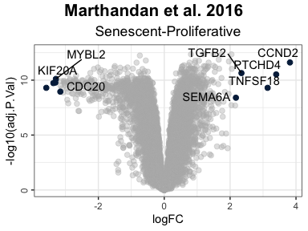
# Change order: signatures in columns, contrast in rows
plotVolcano(DEGs, genes = list(Senescence_Bidirectional = SimpleSenescenceSignature_bidirectional,
Senescence = SimpleSenescenceSignature),
N = NULL,
x = "logFC", y = "-log10(adj.P.Val)", pointSize = 2,
color = "#6489B4", highlightcolor = "#05254A", highlightcolor_upreg = "#038C65", highlightcolor_downreg = "#8C0303",nointerestcolor = "#B7B7B7",
threshold_y = NULL, threshold_x = NULL,
xlab = NULL, ylab = NULL, ncol = NULL, nrow = NULL, title = "Marthandan et al. 2016",
labsize = 10, widthlabs = 24, invert = TRUE)
Note on Continuous Variables
If the user wants to analyse continuous variables (e.g., time or dosage), they must provide a custom design matrix via the modelmat argument, instead of using the variables argument. This is because the variables argument is intended to be used for categorical variables only: internally, when using variables to specify a phenotypic variable of interest, the function constructs a design matrix without an intercept and treats each level of the variable as a discrete group. This is appropriate for defining explicit contrasts between categorical levels but is not suitable for continuous variables, where such discretization would distort the relationship.
For continuous variables, the user should instead build a design matrix manually (e.g., using model.matrix(~ variable)), ensuring that the variable of interest is numeric and has a corresponding column in the matrix with the same name. The calculateDE() function will then use this matrix directly for linear modelling.
The interpretation of the differential expression results remains consistent: the statistics reflect always the expected change in expression associated with a 1-unit increase in the variable (e.g., one day, one unit of dosage, “Senescent” to “Proliferative”, etc).
design <- model.matrix(~1 + DaysToSequencing, data = metadata_example)
DEGs_continuous1 <- calculateDE(data = counts_example,
metadata = metadata_example,
modelmat = design,
contrasts = c("DaysToSequencing"))
#> Warning in limma::makeContrasts(contrasts = contrasts, levels = design_matrix):
#> Renaming (Intercept) to Intercept
DEGs_continuous1$DaysToSequencing[1:3,]
#> logFC AveExpr t P.Value adj.P.Val B
#> RNA45SN2 -0.07628608 7.712585 -1.626674 0.1117361 0.9997685 -6.018805
#> RNA18SN2 0.06743439 9.577467 1.554171 0.1280974 0.9997685 -6.129426
#> RNA18SN3 0.06743439 9.577467 1.554171 0.1280974 0.9997685 -6.129426This usage of the modelmat argument allows the user to combine categorical and numeric variables in a fully customized design matrix. In the example below:
-
(Intercept): Baseline expression when days = 0 and Condition = Control. -
DaysToSequencing: Change in expression per unit of time (day) increase. -
Senescent: Average difference in expression between Senescent and Control conditions.
This approach is useful when modeling continuous effects alongside group comparisons, and it provides complete flexibility in specifying the design.
# Manually construct the design matrix
model_matrix <- model.matrix(~ DaysToSequencing + Condition, data = metadata_example)
colnames(model_matrix) <- c("(Intercept)", "DaysToSequencing", "Senescent")
# Provide the custom design matrix to calculateDE using the `modelmat` argument
DEGs_continuous2 <- calculateDE(data = counts_example,
modelmat = model_matrix)
# Access results for each coefficient
DEGs_continuous2$`(Intercept)`[1:3, ]
#> logFC AveExpr t P.Value adj.P.Val B
#> FN1 13.23994 13.21879 74.04645 1.265799e-43 3.210740e-43 89.73456
#> EEF1A1 12.94192 12.85091 179.29631 1.402180e-58 9.033979e-57 121.69861
#> GAPDH 12.71139 12.53188 147.86006 2.586838e-55 5.583501e-54 115.21324
DEGs_continuous2$DaysToSequencing[1:3, ]
#> logFC AveExpr t P.Value adj.P.Val B
#> RNA45SN2 -0.08056063 7.712585 -1.689209 0.09914647 0.9853746 -6.052523
#> RNA18SN2 0.06598991 9.577467 1.490666 0.14407989 0.9853746 -6.355482
#> RNA18SN3 0.06598991 9.577467 1.490666 0.14407989 0.9853746 -6.355482
DEGs_continuous2$Senescent[1:3, ]
#> logFC AveExpr t P.Value adj.P.Val B
#> CCND2 3.863054 4.406721 12.344742 4.643461e-15 4.865503e-12 24.20437
#> MKI67 -3.655159 6.605339 -9.296026 1.907736e-11 5.010329e-10 16.02834
#> PTCHD4 3.453362 3.556007 10.774059 2.907380e-13 3.864144e-11 20.14942Gene Set Enrichment Analyses
To perform GSEA, the user can use the runGSEA() function. This function takes a named list of differential expression statistics (one per contrast) and a set of gene signatures to compute enrichment scores.
DEGList: A list of differentially expressed genes (DEGs) for each contrast.-
gene_sets: A list of gene sets, where each entry can be:- A vector of gene names (unidirectional analysis).
- A data frame where the first column is the gene name and the second column indicates the expected direction (+1 or -1, bidirectional analysis).
-
stat: The ranking statistic. If NULL, the ranking statistic is automatically selected:-
"B"for gene sets with no known direction (vectors). -
"t"for unidirectional or bidirectional gene sets (data frames). - If provided, this argument overrides the automatic selection.
-
ContrastCorrection: Logical, default isFALSE. IfTRUE, applies an additional multiple testing correction (Benjamini–Hochberg) across all contrasts returned in theDEGListresults list. This accounts for the number of contrasts tested per signature and provides more stringent control of false discovery rate across multiple comparisons (similar to answering the question “Is there any signature that is significant in any of the contrasts” instead of “For each contrast, is there any signature that is significant”). IfFALSE, the function only corrects for the number of gene sets.
GSEAresults <- runGSEA(DEGList = DEGs,
gene_sets = list(Senescence_Bidirectional = SimpleSenescenceSignature_bidirectional,
Senescence = SimpleSenescenceSignature),
stat = NULL,
ContrastCorrection = FALSE)
GSEAresults
#> $`Senescent-Proliferative`
#> pathway pval padj log2err ES NES
#> <char> <num> <num> <num> <num> <num>
#> 1: Senescence_Bidirectional 0.01838843 0.03677686 0.15267586 0.7068136 1.653726
#> 2: Senescence 0.14596611 0.14596611 0.04482895 0.5844505 1.338962
#> size leadingEdge stat_used
#> <int> <list> <char>
#> 1: 7 LMNB1, M.... t
#> 2: 7 LMNB1, MKI67 BDepending on the statistic used, the interpretation of the plots changes:
-
B Statistic vs. t Statistic:
- The B statistic does not specify the direction (enriched or depleted) of the gene set’s alterations. It only indicates the strength of evidence for any alterations.
- The t statistic orders genes from stronger evidence of over-expression to stronger evidence for under-expression.
-
Graph’s annotation:
- When using the B statistic, the plot will include “Altered Gene Set” beneath its title to reflect this focus on whether genes are altered.
- For the t statistic, the plot will include “Enriched/Depleted Gene Set” beneath its title, indicating its focus on the enrichment or depletion of genes.
After running GSEA, the user can visualize enrichment plots using the plotGSEAenrichment() function. This function generates enrichment plots for each gene signature and contrast, displaying also the Normalized Enrichment Scores (NES) and adjusted p-value for each enrichment result. As plotGSEAenrichment’s relevant graphical parameters:
-
grid = TRUE: Arranges the plots in a grid for better visualization. -
titlesize: Adjusts title font size. -
nrow/ncol: Specifies the grid layout for arranging plots.
plotGSEAenrichment(GSEA_results=GSEAresults,
DEGList=DEGs,
gene_sets=list(Senescence_Bidirectional = SimpleSenescenceSignature_bidirectional,
Senescence = SimpleSenescenceSignature),
widthTitle=40, grid = T, titlesize = 10, nrow=1, ncol=2) 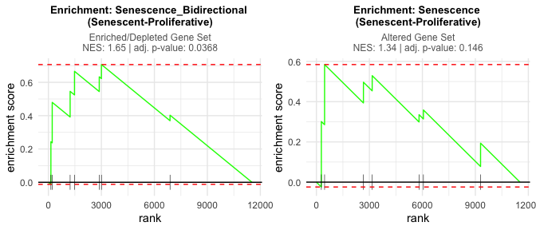
The plotNESlollipop() function creates lollipop plots for visualizing Gene Set Enrichment Analysis (GSEA) results. Each plot displays gene sets on the y-axis and Normalized Enrichment Scores (NES) on the x-axis, with a color gradient proportional to the adjusted p-value. The function supports multiple contrasts and includes options for customizing the color gradient, significance threshold, and plot layout. It can also arrange individual plots into a grid layout for comparative visualization.
plotNESlollipop(GSEA_results=GSEAresults,
saturation_value=NULL,
nonsignif_color = "#F4F4F4",
signif_color = "red",
sig_threshold = 0.05,
grid = FALSE,
nrow = NULL, ncol = NULL,
widthlabels=13,
title=NULL, titlesize=12)
#> $`Senescent-Proliferative`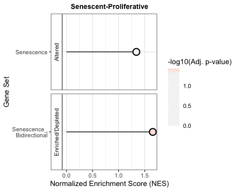
The plotCombinedGSEA() function generates a scatter plot to visualize the results of Gene Set Enrichment Analysis (GSEA) across multiple contrasts. Each point represents a pathway, with:
- X-axis: Normalized Enrichment Score (NES)
- Y-axis: -log10 adjusted p-value (significance)
- Color: Gene sets
- Shape: Contrasts
- Dashed line: Significance threshold
This function helps compare enrichment results when the number of contrasts and the number of pathways is high, scenario of which the example herein is not too representative.
plotCombinedGSEA(GSEAresults, sig_threshold = 0.05, PointSize=6, widthlegend = 26 )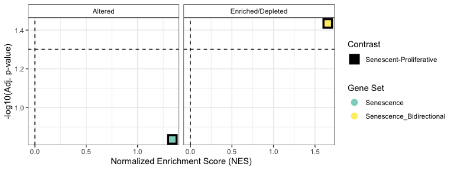
GSEA Association with Chosen Phenotypic Variables
Following the same rational presented in Score association with Chosen Variables, the GSEA_VariableAssociation function automates assessing whether gene expression patterns align with specific biological pathways or signature by performing differential expression (DE) analysis across all possible contrasts for categorical variables or using linear modeling for continuous variables. It then applies Gene Set Enrichment Analysis (GSEA) to evaluate the enrichment of predefined gene sets amongst differentially expressed genes, returning both numerical results and an intuitive lollipop plot for visualization. This approach helps users quickly identify significant associations between metadata variables and gene expression patterns.
Depending on the statistic used (B- or t-statistic):
-
Negative NES:
- t Statistic: A negative NES with the t statistic indicates that the gene set is depleted amongst over-expressed genes (i.e., genes in the set are under-expressed).
- B Statistic: A negative NES using the B statistic means that the gene set is depleted amongst the most altered genes, i.e. that their expression changes less than most genes’.
-
Dashed Lines:
- The dashed lines in the plot represent B statistic results with negative NES, meaning gene sets putatively not altered.
-
Subtitle Differences:
- When using the B statistic, the subtitle of the plot will read “Altered Contrasts”.
- For the t statistic, the subtitle will read “Enriched/Depleted Contrasts”.
GSEA_VariableAssociation(data=counts_example,
metadata=metadata_example,
cols=c("Condition","Researcher","DaysToSequencing"),
mode="simple",
gene_set=list(Senescence = SimpleSenescenceSignature),
saturation_value=NULL, nonsignif_color = "white", signif_color = "red",
sig_threshold = 0.05, widthlabels=30, labsize=10, titlesize=14, pointSize = 5)
#> $plot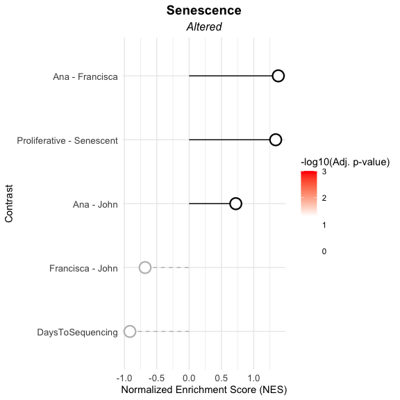
#>
#> $data
#> pathway pval padj log2err ES NES size
#> <char> <num> <num> <num> <num> <num> <int>
#> 1: Senescence 0.1459661 0.3649153 0.04482895 0.5844505 1.3389622 7
#> 2: Senescence 0.8153487 0.8596054 0.01825162 0.2197875 0.7218660 7
#> 3: Senescence 0.1220617 0.3649153 0.05892753 0.4198163 1.3797736 7
#> 4: Senescence 0.8596054 0.8596054 0.01599026 -0.2113031 -0.6810595 7
#> 5: Senescence 0.5467359 0.8596054 0.02231638 -0.2849369 -0.9161661 7
#> leadingEdge stat_used Contrast
#> <list> <char> <char>
#> 1: LMNB1, MKI67 B Proliferative - Senescent
#> 2: GLB1, TP.... B Ana - John
#> 3: LMNB1, C.... B Ana - Francisca
#> 4: CCL2, CD.... B Francisca - John
#> 5: LMNB1, M.... B DaysToSequencing
GSEA_VariableAssociation(data=counts_example,
metadata=metadata_example,
cols=c("Condition","Researcher","DaysToSequencing"),
mode="simple",
gene_set=list(Senescence_Bidirectional = SimpleSenescenceSignature_bidirectional),
saturation_value=NULL, nonsignif_color = "white", signif_color = "red",
sig_threshold = 0.05, widthlabels=30, labsize=10, titlesize=14, pointSize = 5)
#> $plot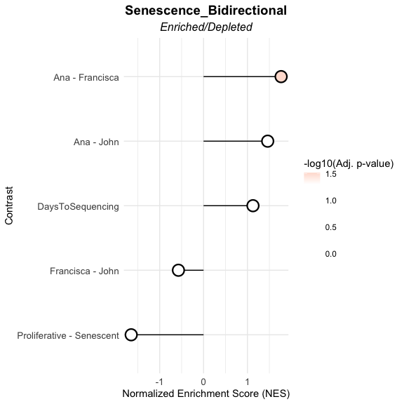
#>
#> $data
#> pathway pval padj log2err ES
#> <char> <num> <num> <num> <num>
#> 1: Senescence_Bidirectional 0.023760331 0.05940083 0.13405093 -0.7068136
#> 2: Senescence_Bidirectional 0.077863457 0.12977243 0.06946518 0.6399995
#> 3: Senescence_Bidirectional 0.006124402 0.03062201 0.25663502 0.7274186
#> 4: Senescence_Bidirectional 0.949172812 0.94917281 0.01513268 -0.2471009
#> 5: Senescence_Bidirectional 0.321938468 0.40242308 0.03305031 0.4899121
#> NES size leadingEdge stat_used Contrast
#> <num> <int> <list> <char> <char>
#> 1: -1.6491022 7 LMNB1, M.... t Proliferative - Senescent
#> 2: 1.4615936 7 GLB1, TP.... t Ana - John
#> 3: 1.7675900 7 LMNB1, C.... t Ana - Francisca
#> 4: -0.5727763 7 CDKN2A, .... t Francisca - John
#> 5: 1.1260283 7 GLB1, CD.... t DaysToSequencing📩 For any questions or concerns, feel free to reach out:
Rita Martins-Silva
Email: rita.silva@gimm.pt